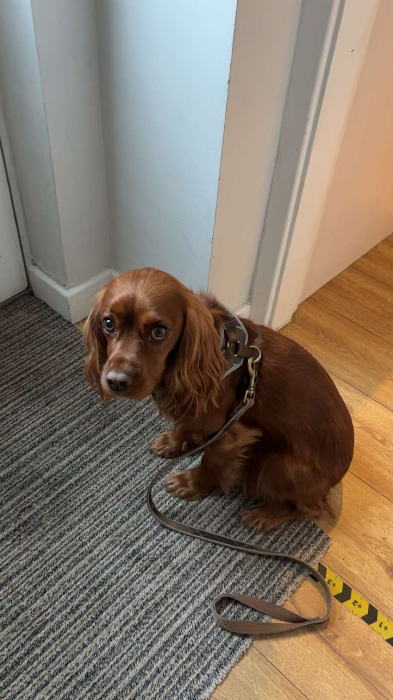

MSc Fusion Energy at the University of York · BSc Physics Analyst at Fusion Advisory Services. Based in Leeds, UK.
I am a Junior Fusion Energy Analyst at Fusion Advisory Services, where I provide technical information and insights to decision-makers in the fusion sector and beyond.
My work focuses on translating complex scientific developments into clear, useful information for those navigating the fusion industry. I aim to help bridge the gap between technical research and practical decision-making.
I am currently studying for an MSc in Fusion Energy at the University of York, building on my BSc in Physics from the same institution. I am also a member of the Institute of Physics, staying active within the broader UK physics community.
Analyst, Fusion Advisory Services
MSc Student, Fusion Energy — University of York
Investigated the efficiency of multi-pulse laser systems for particle acceleration. By correcting pulse spacing for relativistic electron masses...
READ FULL THESIS (PDF)Here's some thoughts, photos and whatever else!

Not much to see here yet, so here is a picture of my dog Charlie!
I'm open to conversations about fusion research, collaboration, and opportunities.